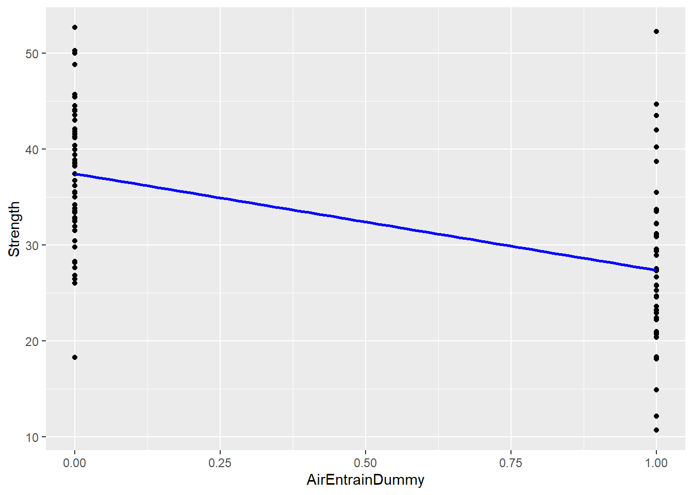
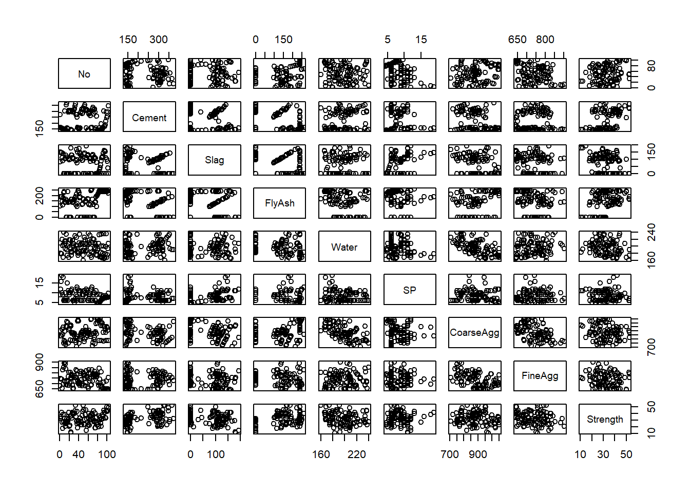
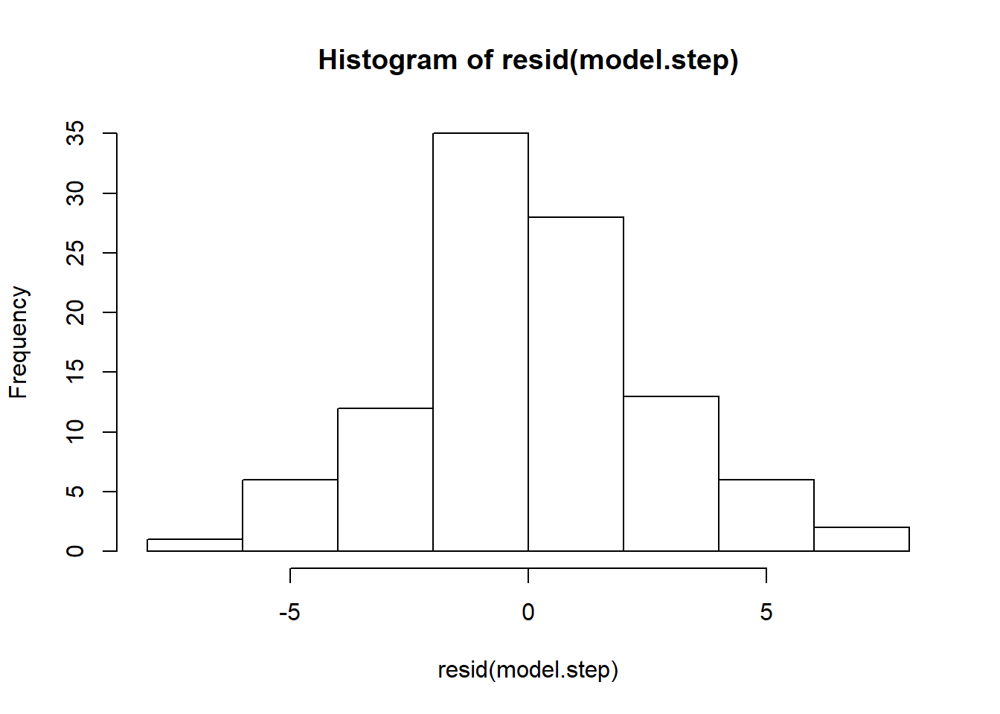
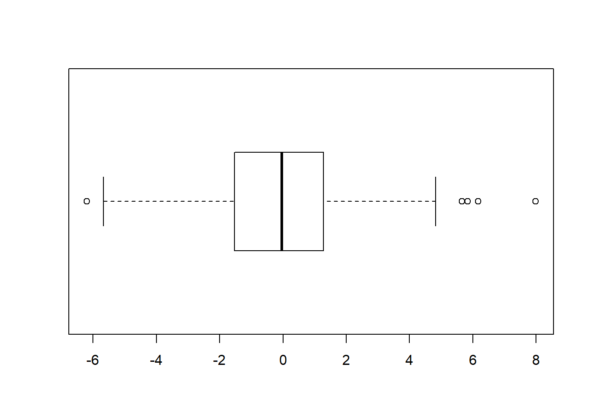
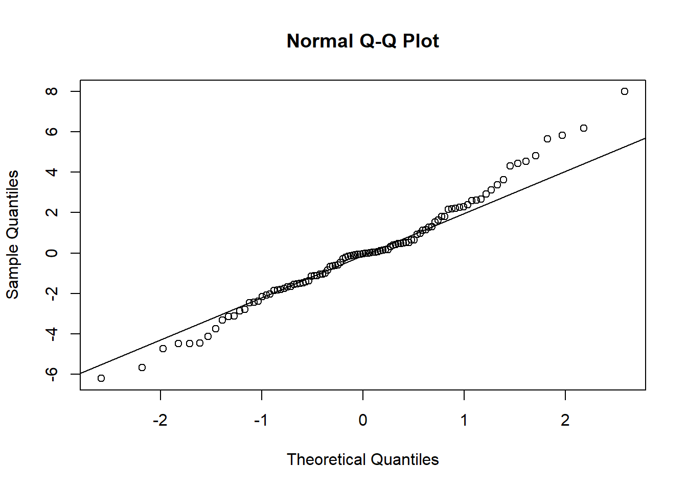
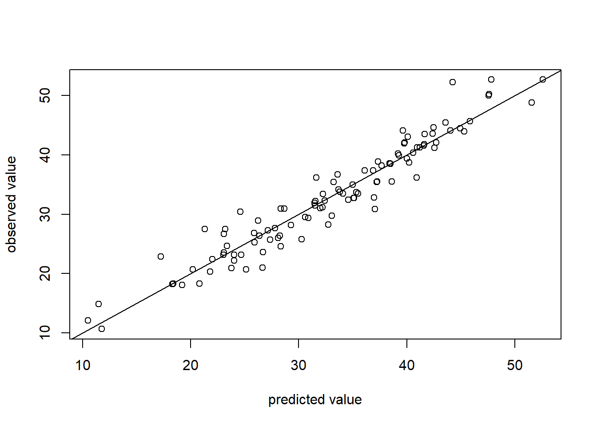
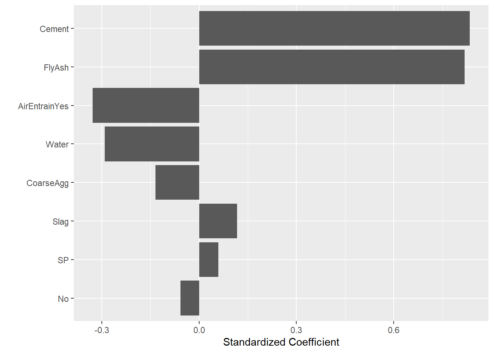

Lesson 10 Multiple Linear Regression
The purpose of this tutorial is to continue our exploration of regression by constructing linear models with two or more explanatory variables. This is an extension of Lesson 9.
10.1 Kitchen sink model
We can extend the lm(y~x) function to construct a more complicated “formula” for the multi-dimensional model: lm(y ~ x1 + x2 + ... + xn ). This tells R to find the best model in which the response variable y is a linear function of a set of explanatory variables x1, x2, and so on.
I will start with a model I call “model.ks” (to denote an “everything including the kitchen sink” approach to variable selection). Note that I do not include AirEntrain in this model because it is categorical:
model.ks <- lm(Strength ~ No + Cement + Slag + Water + CoarseAgg + FlyAsh + SP + FineAgg, data=Con)
summary(model.ks)##
## Call:
## lm(formula = Strength ~ No + Cement + Slag + Water + CoarseAgg +
## FlyAsh + SP + FineAgg, data = Con)
##
## Residuals:
## Min 1Q Median 3Q Max
## -10.307 -2.831 0.502 2.806 8.577
##
## Coefficients:
## Estimate Std. Error t value Pr(>|t|)
## (Intercept) 115.283443 142.786273 0.807 0.421
## No -0.007705 0.020713 -0.372 0.711
## Cement 0.082580 0.046976 1.758 0.082 .
## Slag -0.022513 0.065139 -0.346 0.730
## Water -0.216471 0.142461 -1.520 0.132
## CoarseAgg -0.047911 0.055876 -0.857 0.393
## FlyAsh 0.066842 0.048425 1.380 0.171
## SP 0.251812 0.213277 1.181 0.241
## FineAgg -0.035626 0.057300 -0.622 0.536
## ---
## Signif. codes: 0 '***' 0.001 '**' 0.01 '*' 0.05 '.' 0.1 ' ' 1
##
## Residual standard error: 4.01 on 94 degrees of freedom
## Multiple R-squared: 0.8271, Adjusted R-squared: 0.8124
## F-statistic: 56.21 on 8 and 94 DF, p-value: < 2.2e-16As we should expect, this result is identical to the kitchen sink model in Excel (R2 = 0.8271).
10.2 Categorical explanatory variables
Recall the “air entrainment” variable in the concrete data set:
## Length Class Mode
## 103 character characterAirEntrain is a categorical (yes/no) variable and cannot be used in regression without transforming it to a numerical {0,1} dummy/indicator variable. We can use our recoding skills from Lesson 5 to do this manually, or (as you will see below), we can let R take care of dummy coding for us.
Before we do this, recall the discussion in Lesson 2 about the difference between character variables and factors. We want to treat AirEntrain as a factor (categorical variable) with a finite set of values. Since the tidyverse does not automatically convert character variables to factors, we must do it explicitly. Below I use the dplyr mutate function to replace AirEntrain with the factor version:
## No Yes
## 56 47Now that AirEntrain is a factor, I can include it in the regression and R will take care of recoding it as a dummy variable:
model.ks <- lm(Strength ~ No + Cement + Slag + Water + CoarseAgg + FlyAsh + SP + FineAgg + AirEntrain, data=Con)
summary(model.ks)##
## Call:
## lm(formula = Strength ~ No + Cement + Slag + Water + CoarseAgg +
## FlyAsh + SP + FineAgg + AirEntrain, data = Con)
##
## Residuals:
## Min 1Q Median 3Q Max
## -6.188 -1.548 -0.017 1.277 7.975
##
## Coefficients:
## Estimate Std. Error t value Pr(>|t|)
## (Intercept) 41.500508 95.616675 0.434 0.66527
## No -0.017346 0.013864 -1.251 0.21401
## Cement 0.096195 0.031403 3.063 0.00286 **
## Slag 0.015681 0.043652 0.359 0.72023
## Water -0.138011 0.095431 -1.446 0.15149
## CoarseAgg -0.016038 0.037438 -0.428 0.66935
## FlyAsh 0.086950 0.032399 2.684 0.00862 **
## SP 0.190158 0.142572 1.334 0.18554
## FineAgg -0.002053 0.038399 -0.053 0.95748
## AirEntrainYes -6.068252 0.559372 -10.848 < 2e-16 ***
## ---
## Signif. codes: 0 '***' 0.001 '**' 0.01 '*' 0.05 '.' 0.1 ' ' 1
##
## Residual standard error: 2.679 on 93 degrees of freedom
## Multiple R-squared: 0.9237, Adjusted R-squared: 0.9163
## F-statistic: 125.1 on 9 and 93 DF, p-value: < 2.2e-16You can see in the table of coefficients that a new variable called “AirEntrainYes” has been added to the model automatically. R adds the “Yes” suffix to remind us that the original values of AirEntrain have been mapped to “Yes” = 1. There is no “AirEntrainNo” variable because “No” has been selected as the base-case (when AirEntrainYes = 0).
We can isolate AirEntrain and show this visually:
ggplot(data=Con %>% mutate(AirEntrainDummy = if_else(AirEntrain=="Yes", 1, 0))
, mapping=aes(x=AirEntrainDummy, y=Strength)) +
geom_point() +
geom_smooth(method=lm, col="blue", se=FALSE)
Here, I have had to manually create a temporary AirEntrainDummy variable in order to get the regression line to plot correctly. But you can see the basic idea: Each measure of concrete strength falls on either the AirEntrainDummy = 0 or the AirEntrainDummy = 1 tick mark. It turns out that the mean of the points at AirEntrainDummy = 0 is higher than then mean of the points at AirEntrainDummy = 1. As such, the best-fit line slopes downwards. This is what the negative coefficient for the AirEntrainYes variable tells us: adding air leads to an average decrease in strength of -6.068252.
To summarize categorical variables:
- You should convert categorical variables to factors.
- If you want fine-grained controlled over base-cases and the naming of dummy variables, you should create your dummy variables manually (see the
if_elseexample above). - Alternatively, you can let R create n-1 dummy variables for you automatically, where n is the number of “levels” (or unique values) of the source factor.
You will likely find approach (2) to be the most useful in practice because, in many cases, you will want to change the granularity of your categorical variables. A regression equation with a zillion dummy variables in it is hard to read and has little generalizable business value.
For example, instead of having a factor “city” with many different levels/values {West Vancouver, North Vancouver, Chilliwack, Kelowna, Prince George, …}, it might be better to group cities by region {North, Metro Vancouver, Interior, …}. This is what I mean by changing granularity.
10.3 Checking for colinearity
10.3.1 Scatterplot matrix
Recall that we use SAS’s scatterplot matrix feature to quickly scan for pairs of explanatory variables that might be colinear. To do this in R we must first make sure we limit our data frame to numerical variables (the regression function creates dummies automatically, but AirEntrain remains a categorical variable). To do this, I use dplyr’s select_if function. It only returns columns for which a logical condition is true. R’s is.numeric function returns TRUE if the column is numeric.
## # A tibble: 6 x 9
## No Cement Slag FlyAsh Water SP CoarseAgg FineAgg Strength
## <dbl> <dbl> <dbl> <dbl> <dbl> <dbl> <dbl> <dbl> <dbl>
## 1 1 273 82 105 210 9 904 680 35.0
## 2 2 163 149 191 180 12 843 746 32.3
## 3 3 162 148 191 179 16 840 743 35.4
## 4 4 162 148 190 179 19 838 741 42.1
## 5 5 154 112 144 220 10 923 658 26.8
## 6 6 147 89 115 202 9 860 829 18.1
10.3.2 Correlation matrix
Unfortunately, scatterplot matrices can be hard to read if you have too many variables. You can generate a simple correlation matrix instead and scan for high correlations (close to -1 or +1). It is not as visual, but it works. I pipe the results though the round function to make the matrix more readable:
## No Cement Slag FlyAsh Water SP CoarseAgg FineAgg Strength
## No 1.00 -0.03 -0.08 0.34 -0.14 -0.33 0.22 -0.31 0.19
## Cement -0.03 1.00 -0.24 -0.49 0.22 -0.11 -0.31 0.06 0.46
## Slag -0.08 -0.24 1.00 -0.32 -0.03 0.31 -0.22 -0.18 -0.33
## FlyAsh 0.34 -0.49 -0.32 1.00 -0.24 -0.14 0.17 -0.28 0.41
## Water -0.14 0.22 -0.03 -0.24 1.00 -0.16 -0.60 0.11 -0.22
## SP -0.33 -0.11 0.31 -0.14 -0.16 1.00 -0.10 0.06 -0.02
## CoarseAgg 0.22 -0.31 -0.22 0.17 -0.60 -0.10 1.00 -0.49 -0.15
## FineAgg -0.31 0.06 -0.18 -0.28 0.11 0.06 -0.49 1.00 -0.17
## Strength 0.19 0.46 -0.33 0.41 -0.22 -0.02 -0.15 -0.17 1.0010.4 Model refinement
10.4.1 Manual stepwise refinement
As in Excel, we can manually remove explanatory variables one-by-one until we have a model in which all the explanatory variables are significant. This is the essence of data-driven (versus theory driven) model refinement.
The heuristic we used in Excel for refinement is to remove the variable with the highest p-value (meaning that its slope has the highest probability of being zero). In model.ks, we could start by removing fine aggregates because its p-value is 0.95748. We then re-run the model and determine if we still have any non-significant coefficients.
This iterative process is somewhat easier in R than Excel because we simply cut-and-paste the equation, delete a variable name, and re-run the lm() function.
10.4.2 Automated stepwise refinement
Like SAS, R has several approaches to automatic model refinement. By default the step function uses a bi-directional AIC-based heuristic (that is, it removes and adds variables based on values of the Akaike information criterion). It is conceptually similar to the Mallows Cp-based heuristic favored by the SAS elearning materials. We do not need to understand these heuristics in depth to use them. However, we should appreciate that different algorithms may yield slightly different final models.
## Start: AIC=212.45
## Strength ~ No + Cement + Slag + Water + CoarseAgg + FlyAsh +
## SP + FineAgg + AirEntrain
##
## Df Sum of Sq RSS AIC
## - FineAgg 1 0.02 667.28 210.45
## - Slag 1 0.93 668.18 210.59
## - CoarseAgg 1 1.32 668.57 210.65
## - No 1 11.23 678.49 212.17
## - SP 1 12.76 680.02 212.40
## <none> 667.26 212.45
## - Water 1 15.01 682.26 212.74
## - FlyAsh 1 51.68 718.93 218.13
## - Cement 1 67.33 734.58 220.35
## - AirEntrain 1 844.38 1511.63 294.68
##
## Step: AIC=210.45
## Strength ~ No + Cement + Slag + Water + CoarseAgg + FlyAsh +
## SP + AirEntrain
##
## Df Sum of Sq RSS AIC
## <none> 667.28 210.45
## - No 1 19.89 687.17 211.48
## - SP 1 22.76 690.04 211.91
## - Slag 1 56.43 723.71 216.81
## - CoarseAgg 1 62.38 729.66 217.66
## - Water 1 360.96 1028.24 252.99
## - AirEntrain 1 850.57 1517.85 293.10
## - FlyAsh 1 2141.06 2808.33 356.48
## - Cement 1 2318.00 2985.28 362.77##
## Call:
## lm(formula = Strength ~ No + Cement + Slag + Water + CoarseAgg +
## FlyAsh + SP + AirEntrain, data = Con)
##
## Residuals:
## Min 1Q Median 3Q Max
## -6.1972 -1.5293 -0.0321 1.2833 7.9801
##
## Coefficients:
## Estimate Std. Error t value Pr(>|t|)
## (Intercept) 36.409657 8.674414 4.197 6.13e-05 ***
## No -0.017817 0.010643 -1.674 0.09744 .
## Cement 0.097848 0.005415 18.070 < 2e-16 ***
## Slag 0.017990 0.006381 2.819 0.00587 **
## Water -0.133008 0.018652 -7.131 2.03e-10 ***
## CoarseAgg -0.014053 0.004741 -2.964 0.00384 **
## FlyAsh 0.088660 0.005105 17.367 < 2e-16 ***
## SP 0.195040 0.108925 1.791 0.07658 .
## AirEntrainYes -6.070662 0.554587 -10.946 < 2e-16 ***
## ---
## Signif. codes: 0 '***' 0.001 '**' 0.01 '*' 0.05 '.' 0.1 ' ' 1
##
## Residual standard error: 2.664 on 94 degrees of freedom
## Multiple R-squared: 0.9237, Adjusted R-squared: 0.9172
## F-statistic: 142.2 on 8 and 94 DF, p-value: < 2.2e-16As one might expect, the adjusted R2 has gone up slightly relative to the kitchen sink model.
10.5 Regression diagnostics
Finally, we should examine the residuals and overall fit for the refined model:




10.6 Standardized regression coefficients
Recall the interpretation of the coefficients: “A one unit change in variable \(X_i\) is associated with a \(\beta_i\) change in the response variable.” So here, a one unit change in Cement is associated with a 0.097848 change in Strength. Whether 0.097848 is big or small depends critically on the units used for the Cement variable. If the “one unit change” is measured in grams, then 0.097848 is likely a large effect. In contrast, if a one unit change is measured in metric tonnes, then the effect on strength is much smaller.
The bottom line is this: You cannot meaningfully compare the size of the regression coefficients to assess the most important effect—it is an apples-and-oranges comparison. Standardized regression coefficients are a different matter. A standardized regression coefficient is created by transforming all variables in the model to have a mean of zero and a standard deviation of 1.0. This allows the standardized coefficients to be interpreted as follows: “A one standard deviation change in variable \(X_i\) is associated with a \(\beta_i\) standard deviation change in the response variable”. All this talk of “standard deviation changes” means units do not matter. Standardized regression coefficients are difficult to translate into business terms, but they are directly comparable. This allows you to determine which variables in your final model are really driving the variation in your response variable.
10.6.1 Extracting betas
I have been sloppy with notation in these tutorials: I have used \(\beta_i\) to denote regression coefficients when I should have used \(B\). Traditionally, the Greek \(\beta\) is used to denote the standardized coefficient. For this reason, the package that supplies standardized coefficients is called lm.beta. The package is not part of base R, but is found in the “QuantPsyc” library. You must install this library in RStudio before loading the library (recall the package installation instructions in the data tutorial.
## No Cement Slag Water CoarseAgg
## -0.05749766 0.83361908 0.11748155 -0.29031355 -0.13416672
## FlyAsh SP AirEntrainYes
## 0.81797381 0.05914383 -0.3281879410.6.2 Tornado diagram
A good way to visualize standardized coefficients is as a sorted bar chart known as a tornado diagram:
library(broom) ## needed for tidy call
tidy(model.std) %>% ggplot() +
geom_col(mapping=aes(x=reorder(names, abs(x)), y=x)) +
xlab("") +
ylab("Standardized Coefficient") +
coord_flip()
Here I have to first convert the vector of results into a tibble before piping to ggplot. The reorder call sorts the x-axis (variable names) according to absolute value of their standardized coefficient. The result resembles a tornado (hence the name). It is easy to tell at a glance that both Cement and FlyAsh have a large positive impact on Strength, whereas Water and AirEntrain have a less important negative impact (i.e., more water leads to lower strength). Note that this tornado does not show the statistical significance of the coefficients. We assume after refining our model using the step function that all the coefficients are significant (or at least worth keeping). The tornado diagram shows the relative size of the effect, which is critical to understanding root causes.